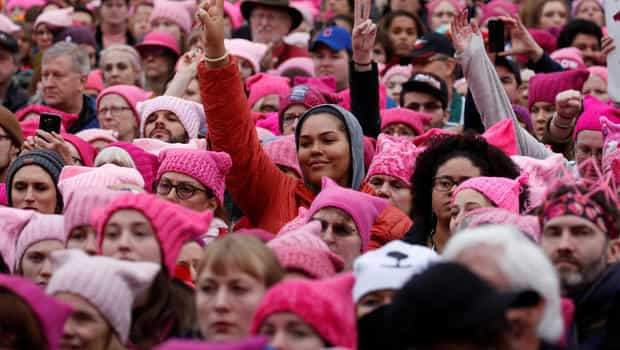

Alfonso Taft is a surfer stoner All-American Aryan alpha male quarterback. Raised in the Northeast, he speaks with a Southern twang for no apparent reason. Host of America's #1 Chadcast.


A political march that took place this past year exhibited rampant obesity, vulgarity, freakish hair dyes and obscene costumes. Another was The Juggalo March. Although both The Women’s March and the Juggalo March featured similar hair aesthetics and profanity, The Juggalo March was decisively classier than November 2016’s Women’s March.
The word class is defined as “a number of persons or things regarded as forming a group by reason of common attributes, characteristics, qualities” or “a social stratum sharing basic economic, political, or cultural characteristics, and having the same social position.” Classy is defined as “high class, rank, or grade; stylish; admirably smart; elegant.”
Both marches featured a majority of mentally ill obese white people strung out on prescription drugs conducting science experiments on their own appearance. Having little respect for your appearance and wearing lewd outfits is low-class, or at least it has been for the past century. Although the bar was set disgustingly low by The Women’s March, The Juggalo March may have been a classier event.
The Women’s March was one of the most disturbing things I’ve ever seen. Thousands of women who should be more preoccupied taking care of children took to the streets to protest a President who once made jokes about groupie sluts in a bus with a fellow man. The President joked about women letting him “grab them by the pussy” in response to their blatant thirst for his alpha male attention. The women in the march were literally wearing a joke on their head in the form of a vagina hat. At least the Juggalos know they are clowns.

During the March’s rally, vulgar speakers boasted about their nastiness and perverted sexual desires. They belittled their foes and called for a violent overthrow of our democratically elected President. It also featured musician Madonna broadcasting her desire to “bomb The White House” as thousands of deranged loons fervently cheered.
The Women’s March featured activists celebrating the butchering of infants. Many were demanding expanded access to government programs dedicated to killing their children.

The Women’s March featured Linda Sarsour, a speaker who promotes the mutilation of female infants via Sharia Law. They wore offensive costumes and littered Washington DC with trash.
Women in the march were celebrated by Democratic politicians and cultural Marxist celebrities. This produced a response from the President who tweeted: “Watched protests yesterday but was under the impression that we just had an election! Why didn’t these people vote? Celebs hurt cause badly.”
The feminists were celebrated as heroes in cultural Marxist media while The Juggalos were labeled a dangerous gang.
In 2011, a FBI Gang Task Force report labeled The Juggalos (a name for fans of The Insane Clown Posse) was a “loosely organized hybrid gang.” Since the 2011 report, American Juggalos have experienced denial of military service, lost custody of children, and having their names added to local gang lists simply for wearing Insane Clown Posse merchandise.
I’m not unfamiliar with Juggalos. They were rampant in my white rural high school. They ran drugs and threw lavish parties that I never attended. Overall, they seemed okay but shady and gross. Most of them grew up to be well-adjusted blue collar guys, their former Juggalo lives left behind them. The aim of their march was to get a retraction from the FBI concerning the 2011 Report.
The Juggalo March did not encourage any violence. The march attendees were peaceful, friendly, reasonably informed, and represented all ends of the political spectrum. Based Juggalos as well as Bernie ‘JuggaBros’ attended the March. They all gathered in Washington DC to collectively to say, “We’re not a violent gang. This is bullshit.”
What if fans of Madonna and Snoop Dogg were labeled gang members? They represent only two mainline celebrities who’ve called for the assassination of the President of The United States. To date, The Juggalos haven’t threatened anybody, they just don’t want be labeled gangbangers for wearing merchandise of their favorite rap group.
Although both feminists and juggalos share the same propensity for vulgarity, clownish outfits, and sugary snacks, the Juggalos are not nearly as volatile or murderous as modern day feminists.
I personally did not attend either marches but when observing the events closely online the visual comparisons are unavoidable. The optics of both of the events were horrifying, but the Women’s March stood out as more sinister.
In a backwards society many are now referring to as “clown world,” the mental patients are running the asylum. The honest clowns are labeled gang members while the oblivious clowns are celebrated as useful idiots.
Read More: What The Anti-Trump Feminist March on Washington Really Means